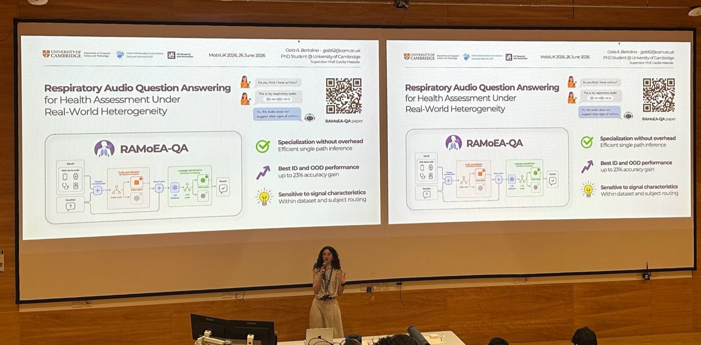

Conference talkMobiUK 2026
Respiratory Audio Question Answering for Health Assessment Under Real-World Heterogeneity
MobiUK 2026 — UK Mobile, Wearable and Ubiquitous Systems Research Symposium, co-located with ACM MobiSys · Cambridge, UK

How can heterogeneity in respiratory audio question answering be addressed without introducing computational overhead?
At MobiUK 2026, co-located this year with ACM MobiSys, I presented results from our work RAMoEA-QA: a progressive, representation-conditioned specialization framework that handles heterogeneity across devices, modalities and query types, while avoiding the cumulative computational cost of activating multiple expert models.